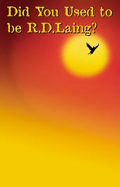

|
|
| John Muir: Rhapsody in Green |
| Indian Peter's Coffee House |
| Platero |
| A Christmas Carol |
| Italia 'n' Caledonia |
| A Funny Valentine |
| Did You Used To Be R D Laing? |
Current shows:Did You Used To Be R D Laing?ReviewsNever underestimate the power on one. Although there two here on stage, strictly speaking. Mike Maran has the kind of voice that makes you wonder why the whole world isn’t learning to speak with a Scottish accent. What he does isn’t a play, or even a one-man show. It’s what I can only describe as a telling. And what he tells here is the story of Ronnie Laing – the rebel psychiatrist, iconoclast and philosopher. The wonderful thing is you know he is telling you this story because it is important to him. And so it becomes important to you. The show is beautifully crafted. There is not a word or a silence, a piece of music or a painted image that doesn’t have significance. Ruth Barrie’s impressive backdrop of the black angel over Glasgow echoes a painting of Icarus that Laing had on his consulting room wall, and each song in the jazz tone poem that David Milligan creates so wonderfully on piano fits its sentiment and even sometimes its rhythm to the moment. R.D.Laing came to psychiatry at a time when mental illness was treated with pickaxe lobotomies, insulin comas and electric shocks. He taught that schizophrenia was not about ‘breaking down but rather breaking out.’ He created, with some success, safe environments for schizophrenics to voyage through their madness, suggested – like an extremist Philip Larkin – that parents drive their children mad and then questioned the very concept of madness. So it was not surprising that he was vilified by the establishment. As much as madness, Lang philosophised more intensely on the subject of love than anyone else I can think of. Early on, talking about Laing’s troubled relationship with his mother, Maran quotes a very typical four lines of his. Anyone who has read the tiny intense Knots will recognise Laing’s endless insoluble struggle… ‘Do you love me? Do you believe me? Believe me, you don’t love me.’ Maran speaks softly and carries a very big stick. Believe me. I loved it. Kate Copstick, The Scotsman 2002 As a greenhorn Herald hack I was required by the editor to produce a lengthy obituary of Glasgow shrink R.D.Laing in short order on the evening we learned of his death. The piece has remained one of those of which I am most proud. Mike Maran’s new show puts that small achievement in overdue perspective. Maran, in another masterpiece of storytelling to follow the huge success of his staging of Captain Corelli’s Mandolin has a simple thesis: that R.D.Lang’s great humanity and sensitivity has been buried beneath a reputation as a pop-psychologist,philosopher and sixties guru that does the man himself few favours. Resplendent in a red suit and fuelled by regular measures of Glenmorangie, Maran draws on personal acquaintance as well as medical case studies to build an affectionate but objective picture of the man. His partner on stage is jazz pianist, Dave Milligan, with a part improvised soundtrack that takes in Billy Strayhorn, Keith Jarrett, and, crucially – Lang’s contemporary, Bill Evans. He accompanies a performance full of funny stories and witty lines – another touching triumph from Maran. Keith Bruce, Arts Editor, The Herald Pop shrink who did all the talking: The Gorbals-born pop psychiatrist RD Laing may have ended up an old soak, but in his sixties heyday he was also partly responsible for the humanising of his profession. When he started out in medicine in the fifties it was still normal practice to use electric shocks, insulin induced comas and lobotomies to 'treat' the mentally ill. Ronnie Laing would have none of this: he talked to people As an obituary by Anthony Clare - one of today's pop shrinks - is quoted as saying in Mike Maran's wonderful little show, Laing 'dragged psychiatric illness and those who suffered from it onto the front cover of newspapers and magazines and gave the most powerful and eloquent of voices to those who had until then been mute in their isolation.' For Laing it was normal to be mad - and mad to be normal. What Maran has done so eloquently and touchingly is to create a potted biography that presents Laing as troubled and difficult but also as brilliant and deeply humane. For those who know little of the man who was once one of the most famous names in the country and beyond, Did you used to be R. D. Laing? will serve as a quirky but spot-on introduction to his ideas. For others, there's the great entertainment value of a show that spookily summons up a great spirit. Maran, who is also behind the hit stage version of Captain Corelli's Mandarin, acts as an increasingly drunken narrator of the life of Laing. He speaks as a close friend who was there, or nearby, when Laing was developing his thoughts on mental illness and its treatment. As a young doctor, the soon-to-be celebrity shrink would wander the wards of Glasgow mental institution, full of compassion for the plight of patients and boiling with anger at the blindly inhumane treatment they received. For one man the breakthrough came when Laing sat down and simply listened to him talk about himself for a couple of hours. Then there were the group of disturbed women whose lives were changed when their hospital environment was turned into one of domestic comfort where they were even allowed to bake cakes. Simple human congress was their saving. Listening to Maran tell these stories was both engrossing and revelatory. In an age where the 'talking cure' is common, it is hard to realise that recognising people for themselves and not as a set of symptoms was something that had to be fought for when Laing was first practising, The great achievement of this show is that it recreates the moments of revelation Laing experienced. It also reinvents those moments with their humanity. Kenneth Speirs, The Mail on Sunday The genre to which Mike Maran’s one man show about psychiatrist R.D.Laing belongs is the lecture. Not any lecture, but a blue-riband one, drawing on Maran’s talent as a communicator and his background knowledge of his subject, supported with live piano music by David Milligan. Maran begins with Laing’s funeral in 1989. ‘He should have been cremated,’ he says. ‘The whisky fuelled flames would have carried his soul into the air.’ aing grew up in Ardbeg Street, at the respectable end of the Gorbals. Maran calls him the Scottish pop-shrink, rebel, yogi, philosopher and healer and spell-blindingly proves that this was so. His script is quintessentially Glaswegian: mordant, pungent, orgiastically celebrating little day to day bits of grotesque. This is remarkable because Maran is not Glaswegian – but he’s thought himself into his subject. The short history of psychiatry that comes out as a by-product of Laing’s life story is fascinating. Maran gives graphic descriptions of therapeutic techniques – accepted until very recently – that make medical malpractice look like mistakes in a high school first aid class. Laing spent much of his life in open opposition to fellow practitioners who espoused these techniques. Laing became a psychiatist because as an ordinary doctor he became intrigued by a head injured patient who thought she was a horse. He practised in a large mental hospital in Glasgow, which he missed mightily after moving to London to psychoanalyse middle class neurotics. Laing’s book The Divided Self had meanwhile taken the world by storm. When the drink finally got him he left behind four widows and many children and as Maran tells us, his obiturist, Clancy Sigal, wrote: ‘Laing often walked on the other side of madness. Anything less was voyeurism.’ As an epitaph, Maran sings – beautifully – What Kind if Fool Am I? to the sympathetic, almost talkative piano that has punctuated the lecture all along. Bonnie Lee, The Scotsman 2001 This is the tale of a double life. The tale of a very troubled revolutionary who was probably the best-known radical psychiatrist of our times. As Mike Maran tells it in his compulsive City Festival show, R.D.Laing was the sort of man who, when he died, had his grave filled to overflowing with whisky bottles dropped on his coffin by friends as tributes. However, that morbid space could equally have been filled by the astonishing vilification that greeted Laing’s death, just as in life it had greeted his theories. Did You Used to be R.D.Laing? is full of tales both charming and disturbing, the sort of grotesque vignettes you’ll hear in any Scottish pub. And appropriately Maran brought along his own bar, a Ruth Barrie backdrop of a dark angel over Glasgow and the spiky sound of the jazz greats, by way of a set. This was simply masterful storytelling. Case studies and seemingly personal acquaintances were used to paint funny, witty, sad pictures of the pop psychologist who challenged a world of pick axe lobotomies, insulin comas and electric shocks. Laing was a confrontational drunk and 1960s guru who believed schizophrenics needed safe places to voyage through what he saw as a healing madness. Maran, looking splendid in a red suit, offers a touching, enlightening journey through the bizarre life of an exceptionally humane sensitive man who had a very personal understanding of the fact that living with madness might actually do you good. Amanda Watson, South China Morning Post. |
|  |
| More about this show: |
| Reviews |
| Photos |
| Tour Dates |
| The Music |